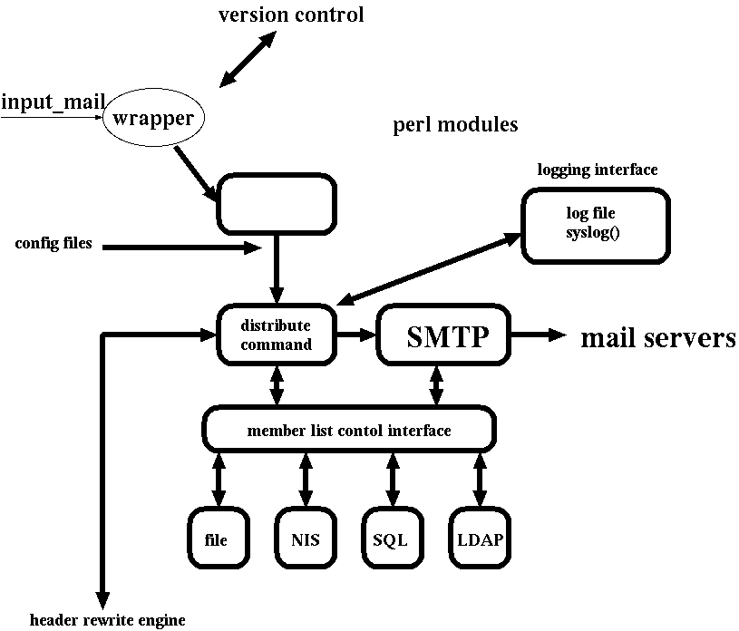

fml5 プロジェクトの目的
このページ群 (
http://www.fml.org/devel/
)
は将来の fml-current についてのデザインや実装例を紹介しています。
おおまかにいえば fml 4.0 の再構想 (refactoring)です。
これは fml 5.0 のアイデアを募るための、
fml 5.0 のアルファ版のアルファ版のアルファ版
もしくは
プロトタイプ
とでもいうべきものです。ですが、すでに動く実装例をダウンロードできます
し、fml 1.2 相当の機能を使うこともできます。しかしながら、変数名もアー
キテクチャアも本決まりではないので、将来変わる可能性があります。
また、多くの機能が実装されていません。これは、デザインを最初から考え直
すに当たり、アイデアや意見を募集するためにまだまだ原型にとどまっている
ためでもあります。
ものによっては fml 5.0 用に作られたモジュールを fml 4.0 へ
戻すことも検討しています。
ご意見・御感想をお待ちしております。
-
おおざっぱまな構想
-
設定ファイルとメニュープログラムの負荷を少なくしたい
-
全部 perl module 形式 (要 5.004 以降)
-
CUI (makefml) インターフェイスおよび CGI インターフェイス
これは従来通りのもの。
ただしより統合化され、
よりメニューなどが書きやすいものであるように
(実装者が楽できる設定ファイル形式がのぞましい et.al.)
-
乖離層
- バージョンアップを簡単にできるように
- CPAN モジュール使いまくり
(ただし、できるだけ直接使うより、
一層被せておくほうがよい)
- 3rd party 用ディレクトリ
-
統一化されたメンバーリストなどへのアクセスをできるだけ抽象化する。
- ファイル (実装済み)
- /etc/group (実装済み)
- NIS (実装済み)
- SQL
- LDAP
- SSRP (?)
実際には効率の問題もあり、
あらゆる抽象化は重たくなってしまう。
しかし少々重くなっても実装しよう。
-
新リリースエンジニアリング
-
IPv4/IPv6 ready (実装済み)
-
ドキュメントは SGML で DTD は docbook (か?)
アーキテクチャア・イメージ
